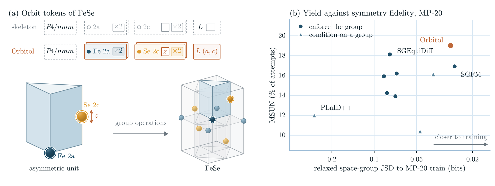
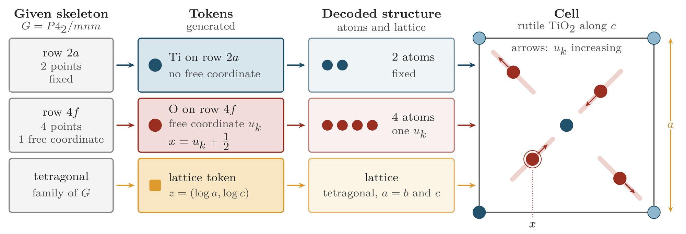
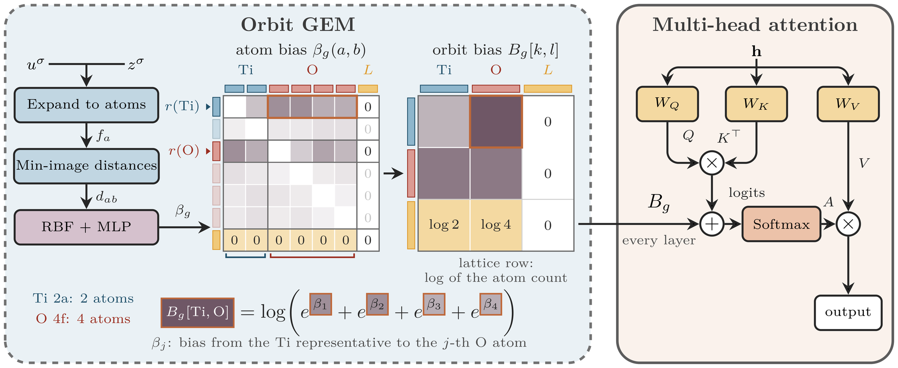
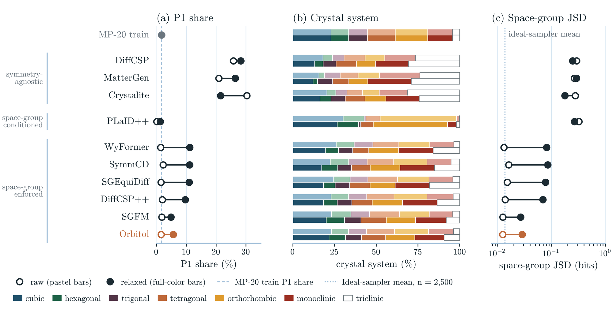
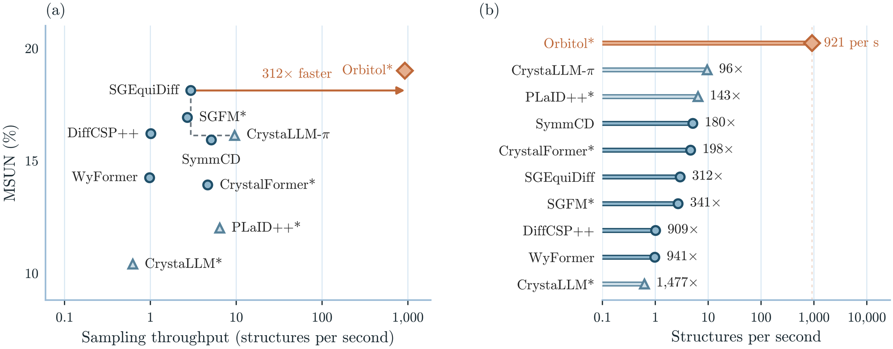
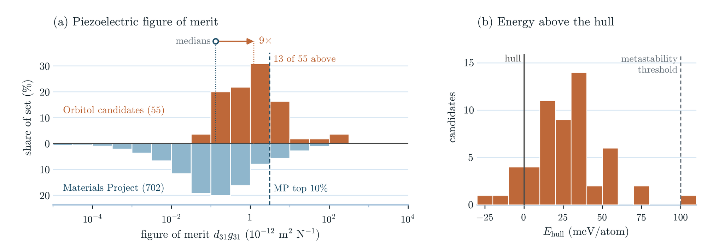

Generating crystals in a chosen space group
Generative models such as MatterGen and Crystalite propose new crystals by learning from known ones [1, 2]. Many of them treat a crystal as a set of atoms and have no control over its space group, and their samples tend to come out less symmetric than the data. Only 1.7% of the MP-20 training set is in P1, the group that contains nothing but lattice translations. After relaxation with a machine-learned potential, 28.3% of DiffCSP samples, 26.4% of MatterGen samples and 21.5% of samples from our Crystalite reproduction are in P1 [3, 1].
A materials search needs more than fewer P1 structures, since P1 crystals can be piezoelectric or polar too. It needs control over the space group, because many properties are allowed only in some crystal classes. Bulk piezoelectricity needs a noncentrosymmetric class other than 432, and pyroelectricity and conventional ferroelectricity need a polar class [4]. Giving a model the group as a label does not solve this, because nothing then forces the coordinates and the lattice to respect the group's operations [1]. Other models build the operations into generation instead. CrystalFormer generates Wyckoff assignments, DiffCSP++ takes them as given, and SymADiT and UFO-MGen model orbit representations [5, 6, 7, 8].
Our new model, Orbitol, is built on Crystalite [2] and uses one token per Wyckoff orbit instead of one token per atom. An orbit is a set of atoms that the symmetry operations map onto each other. We first fix a space group and the Wyckoff positions that its orbits occupy, and call this combination the skeleton. Orbitol then generates an element and the free coordinates of each orbit, together with a lattice of the shape the group allows, and the operations of the group place all the other atoms. Every valid structure that comes out is therefore invariant under the operations of the requested group.

On MP-20, Orbitol had the highest discovery yield we observed among ten symmetry-aware models. After relaxation it kept its space group about as well as the best of them, and it samples about 310 times faster than SGEquiDiff, the baseline with the next highest yield. We then used it to search for piezoelectric materials, and most of the candidates we selected passed our density functional theory checks.
Orbits as tokens
Rutile, TiO2 in \(P4_2/mnm\), shows the idea in a small cell. Its six atoms form two orbits. The two Ti atoms sit on Wyckoff position 2a, where the symmetry fixes them completely. The four O atoms sit on position 4f, and all four positions depend on one free coordinate \(x\):
The tetragonal lattice has \(a = b\) and right angles, which leaves \(a\) and \(c\). Two elements and three numbers, \(x\), \(a\) and \(c\), therefore describe the whole cell.
In general, the International Tables give each space group a table of Wyckoff positions, with one row for every kind of orbit the group allows [4], and we call these entries Wyckoff rows. A row gives the number of atoms its orbit places in the conventional cell, the standard cell for showing the symmetry, and the number of free coordinates. The general row, whose atoms sit on no symmetry element, has three free coordinates. Rows on mirror planes or rotation axes have one or two, and fixed rows such as rutile's 2a have none. Moving a free coordinate moves all atoms of the orbit together, and the symmetry holds for every value.
The lattice obeys the same operations, so the crystal family fixes which cell parameters are free, from \(a\) alone for a cubic cell to all six for a triclinic one. The skeleton is the space group together with the list of occupied rows, where a row appears twice if it holds two orbits.
Orbitol's network sees one token per orbit and one for the lattice. An MP-20 structure has 4.7 orbits on average, against 10.4 atoms in the cell that MP-20 stores, so Orbitol needs about half as many tokens as Crystalite. It also denoises only the free coordinates and the free lattice entries, where Crystalite denoises three coordinates per atom and six lattice entries. The saving disappears in P1, where no operation other than the lattice translations relates two atoms, so every orbit is a single atom with three free coordinates and Orbitol's tokens are the same as Crystalite's.
The explorer opens on rutile. Drag \(x\) and the four O atoms slide along their lines while the two Ti atoms stay put. In spinel, MgAl2O4, the strips show 4 Orbitol tokens against 15 for Crystalite. In CsSnF3, which is in P1, they are identical.
Representing orbits in a model
Orbitol keeps Crystalite's diffusion Transformer [2] and gives it one token per orbit instead of one per atom. For a given skeleton, the model denoises the element of each orbit together with the orbit's free coordinates and the free lattice entries, and the skeleton itself is never noised. To decode, we expand each orbit into its atoms with the Wyckoff tables.

Each orbit token also carries an embedding of its Wyckoff row, and an embedding of the space group enters every layer, so the network knows which group and rows it is filling. The symmetry would hold without these embeddings, since it comes from the decoding step.
Crystalite's Geometry Enhancement Module (GEM) adds a geometry-dependent bias to the attention score of every pair of atoms [2]. An orbit token represents several atoms, so we expand the noisy orbits into atoms, compute the atom-pair biases and combine them into one bias per pair of orbit tokens. All atoms of an orbit share its key and value, so the orbit should receive the total attention its atoms would have received, and a log-sum-exp of their biases gives exactly that. Averaging the biases would have given an orbit of four atoms the weight of one.

To sample, we draw a skeleton from the 3,290 distinct skeletons of the MP-20 training set at their training frequencies. Crystalite's EDM sampler [9, 2] then denoises the tokens in 25 Heun steps, or 49 network evaluations, for the MP-20 model.
Yield, symmetry and speed
We trained on MP-20 and on Alex-MP-20, which both contain cells of up to 20 atoms [10, 1], and compared Orbitol with nine symmetry-aware models. CrystaLLM, CrystaLLM-π and PLaID++ declare a space group with each structure, and CrystalFormer, SGEquiDiff, WyFormer, SymmCD, DiffCSP++ and SGFM enforce one [11, 12, 13, 5, 14, 15, 16, 6, 17]. Every model went through the same pipeline. We took its first 2,500 attempts and counted failures against it, relaxed the structures with the machine-learned potential NequIP-OAM-L for 500 steps of the FIRE optimizer, without any symmetry constraint [18], scored stability and novelty with LeMat-GenBench [19], and detected symmetry with spglib at 0.1 Å [20]. The symmetry-agnostic DiffCSP, MatterGen, MiAD [21] and our Crystalite reproduction were only checked for symmetry.
Our main yield metric is MSUN, the share of attempts that give a stable or metastable structure (at most 0.1 eV/atom above the convex hull of known phases) that is also unique among the model's attempts and absent from the LeMat-Bulk database. Because we care about symmetry, we also ask whether the relaxed structure is still in the group it was generated in. Retention is the share of attempts for which it is still in exactly that group, or in the group the model declared, and joint yield is the share of attempts that are MSUN and retained at the same time.
| Model | MSUN (%) ↑ | Joint yield (%) ↑ | Group retained (%) ↑ | SPARC ↑ | JSD (bits) ↓ |
|---|---|---|---|---|---|
| Space group conditioned | |||||
| CrystaLLM | 10.4 | 4.6 | 77.8 | 73.5 | 0.047 |
| CrystaLLM-π | 16.1 | 8.8 | 74.3 | 69.4 | 0.038 |
| PLaID++ | 12.0 | 7.2 | 76.6 | 36.3 | 0.267 |
| Space group enforced | |||||
| CrystalFormer | 13.9 | 7.8 | 62.3 | 59.4 | 0.071 |
| SGEquiDiff | 18.1 | 8.1 | 54.7 | 51.1 | 0.077 |
| WyFormer | 14.2 | 6.2 | 51.8 | 48.6 | 0.081 |
| SymmCD | 15.9 | 9.0 | 57.4 | 54.5 | 0.085 |
| DiffCSP++ | 16.2 | 7.6 | 57.3 | 55.1 | 0.069 |
| SGFM | 16.9 | 10.8 | 73.4 | 71.9 | 0.027 |
| Ours (space group enforced) | |||||
| Orbitol | 19.0 | 13.8 | 74.7 | 73.8 | 0.029 |
De novo generation on MP-20 with 2,500 attempts per model. The Orbitol and PLaID++ rows are means over three sampling seeds. For the three conditioned models, retention uses the group the model declared. SPARC, explained below, combines retention with how well the retained groups match the training distribution. SymmCD and WyFormer are our retrainings on the training split, and SGFM draws its Wyckoff templates from the training set, as Orbitol does. An ideal sampler of the training distribution reaches a JSD of about 0.014 bits at this sample size. The paper has the full tables, including SUN and the P1 shares.
Orbitol reached 19.0% MSUN, the highest we observed, but SGEquiDiff was close behind at 18.1%. Joint yield separates the models more clearly, with Orbitol at 13.8% and SGFM next at 10.8%, while SGEquiDiff falls to 8.1% because it keeps its group in only 54.7% of attempts. Most of Orbitol's discoveries are metastable, and only 1.11% of its attempts are stable, unique and novel.
Each model here is a single training run, the Orbitol checkpoint is the one with the highest MSUN seen during training, and stability is judged from machine-learned energies. Since we scored the agnostic models for symmetry only, the table cannot say whether orbit tokens raise yield over Crystalite itself. Nor should these numbers be set beside the LeMat-GenBench leaderboard, which scores structures that the authors submit and gives the symmetry-aware models in both an MSUN 3.4 to 13.4 points lower than ours.
Symmetry after relaxation
Among the agnostic models, DiffCSP, MatterGen and our Crystalite reproduction still have 21 to 28% of their relaxed structures in P1, against 1.7% in the training set. The enforced models start close to the training distribution and move away from it during relaxation, Orbitol and SGFM the least. Their JSDs to the training groups, 0.029 and 0.027 bits, are about twice the value of an ideal sampler, and the gap between them is within sampling noise. Orbitol kept its group in 74.7% of attempts, close to SGFM's 73.4% and above the 51.8 to 62.3% of the other enforced models.

PLaID++ shows why retention alone can mislead. It kept its declared group in 76.6% of attempts, about as often as Orbitol, yet its relaxed JSD is 0.267 bits, nine times higher, because its outputs pile up in a few groups such as \(Pnma\) and \(Fm\bar{3}m\) that rarely change on relaxation. To account for this we introduce SPARC, which multiplies the share of attempts that keep the group they had before relaxation by a measure of how well the kept groups match the training distribution. It uses the group detected before relaxation so that it can also score models that request no group, and it reaches 100 only when every attempt keeps its group and the kept groups follow the training distribution. Orbitol scores 73.8, close to CrystaLLM (73.5) and SGFM (71.9), and PLaID++ scores 36.3. Relaxation adds some noise to all of these numbers. Repeating the same relaxation on the same 500 structures changed the detected group of up to 17 of them, so differences of one to three points in retention can be run-to-run variation.
On Alex-MP-20, Orbitol reached 34.2% MSUN and kept its group in 71.6% of attempts. Novelty is harder to judge on this dataset, because LeMat-Bulk, the reference for novelty, contains Alexandria and so overlaps the training data.
Sampling speed
We timed every model in the table on one RTX 6000 Ada, running its released sampler at the settings used for the results above with the batch size tuned for throughput. SGFM's released sampling loop handles one structure at a time, so we timed our batched reimplementation of it, which we checked against the original. CrystaLLM's released sampler also generates one structure at a time, without a key-value cache, and we timed it as released. In large batches Orbitol samples about 920 structures per second, or 1.09 s per 1,000, which is about 310 times faster than SGEquiDiff and 96 to 1,477 times faster than the other symmetry-aware models, with the largest factor against CrystaLLM. The speed comes from a short sampler, with 49 network evaluations per structure against about 2,000 for the diffusion baselines and 500 for SGFM, and from the implementation. One token per orbit shortens the sequences, crystals are packed without padding, the network runs as a compiled CUDA graph and decoding is vectorized. At this rate relaxation becomes the slow step, since relaxing 1,000 Orbitol samples for 500 steps takes a little over two minutes on the same GPU.

Piezoelectric candidates
Piezoelectricity is allowed only in the 20 noncentrosymmetric crystal classes other than 432 [4], so we drew Orbitol's skeletons from these classes alone. We kept samples that held their group through relaxation with NequIP-OAM-L and came within 0.1 eV/atom of the Alex-MP-20 hull, and a machine-learned screen, to be described in a separate paper, picked 62 with a high predicted response for density functional theory (DFT). Four were metallic or nearly so, which left 58 candidates in 26 space groups.
We computed each candidate's elastic, dielectric and piezoelectric tensors in DFT, the last two mostly with density functional perturbation theory [22]. Our figure of merit is the transverse energy-harvesting product, maximized over crystal orientations [23],
where \(d_{31}\) is a piezoelectric strain coefficient and \(\varepsilon^{T}_{33}\) the permittivity at fixed stress. We computed the same quantity for the 702 Materials Project materials with a non-zero piezoelectric tensor [24, 25, 26].
Of the 58 candidates, 55 passed two stability checks, with no unstable optical phonon at the zone center and a positive-definite elastic tensor. Against a hull of Materials Project and Alexandria phases recomputed with our settings [27, 28], 54 of these lie within 0.1 eV/atom, and 49 match no entry of either database in the same space group.
The median figure of merit of the 55 is 1.23×10−12 m2/N, about nine times the Materials Project median of 0.133×10−12 m2/N. Thirteen of them, 12 of which are new, lie above the Materials Project's 90th percentile of 3.09×10−12 m2/N.

The shift reflects how the candidates were chosen. They were preselected for a high predicted response, and the Materials Project set was not. Compared only with Materials Project materials of the same point group, they sit at a median percentile of 72.
Summary and limitations
Writing a crystal as orbits leaves the network a smaller job. The skeleton supplies the operations of the group, and the network generates only the elements, the free coordinates and the free lattice entries. On MP-20 this gave the highest MSUN and joint yield we observed among the symmetry-aware models, symmetry after relaxation on par with the best of them, and sampling about 100 to 1,500 times faster. In a search for piezoelectrics, most of the candidates we selected passed our DFT checks, and most of those were new.
The main limitation is the skeleton prior. We draw skeletons from those seen in training, so Orbitol cannot propose a skeleton that is missing from the data, and 5.2% of validation and 4.9% of test structures have such a skeleton. A learned prior over skeletons could lift that restriction. The benchmark energies are machine-learned estimates, and unconstrained relaxation can still move a structure out of its group.
The speed is the part we find most promising. Once generation costs about a second per thousand structures, relaxation and scoring set the cost of a search, and methods that need many fresh samples, such as reinforcement-learning fine-tuning, become affordable.
Selected references
- Zeni et al. (2025). A Generative Model for Inorganic Materials Design. Nature.
- Hadzi Veljkovic et al. (2026). Crystalite: A Lightweight Transformer for Efficient Crystal Modeling. arXiv preprint.
- Jiao et al. (2023). Crystal Structure Prediction by Joint Equivariant Diffusion. NeurIPS.
- Aroyo (ed.) (2016). International Tables for Crystallography, Volume A: Space-group symmetry. International Union of Crystallography.
- Cao et al. (2025). Space Group Informed Transformer for Crystalline Materials Generation. Science Bulletin.
- Jiao et al. (2024). Space Group Constrained Crystal Generation. ICLR.
- Karmush et al. (2026). SymADiT: Symmetry-Aware Crystal Generation with Latent Flow Matching. arXiv preprint.
- Zhou et al. (2026). Topology-Stratified Materials Discovery with A Flow-Based Generative Model. arXiv preprint.
- Karras et al. (2022). Elucidating the Design Space of Diffusion-Based Generative Models. NeurIPS.
- Xie et al. (2022). Crystal Diffusion Variational Autoencoder for Periodic Material Generation. ICLR.
- Antunes et al. (2024). Crystal structure generation with autoregressive large language modeling. Nature Communications.
- Bone et al. (2025). Discovery and recovery of crystalline materials with property-conditioned transformers. arXiv preprint.
- Xu et al. (2026). PLaID++: A Preference Aligned Language Model for Targeted Inorganic Materials Design. ICML.
- Chang et al. (2025). Space Group Equivariant Crystal Diffusion. NeurIPS.
- Kazeev et al. (2025). Wyckoff Transformer: Generation of Symmetric Crystals. ICML.
- Levy et al. (2025). SymmCD: Symmetry-Preserving Crystal Generation with Diffusion Models. ICLR.
- Puny et al. (2025). Space Group Conditional Flow Matching. arXiv preprint.
- Kavanagh and MIR Group @ Harvard (2026). NequIP & Allegro Foundation Potentials. Zenodo.
- Betala et al. (2026). LeMat-GenBench: A Unified Evaluation Framework for Crystal Generative Models. arXiv preprint.
- Togo et al. (2024). Spglib: a software library for crystal symmetry search. Science and Technology of Advanced Materials: Methods.
- Okhotin et al. (2025). MiAD: Mirage Atom Diffusion for De Novo Crystal Generation. arXiv preprint.
- Wu et al. (2005). Systematic treatment of displacements, strains, and electric fields in density-functional perturbation theory. Physical Review B.
- Bowen et al. (2014). Piezoelectric and ferroelectric materials and structures for energy harvesting applications. Energy & Environmental Science.
- de Jong et al. (2015). A database to enable discovery and design of piezoelectric materials. Scientific Data.
- Petousis et al. (2017). High-throughput screening of inorganic compounds for the discovery of novel dielectric and optical materials. Scientific Data.
- de Jong et al. (2015). Charting the complete elastic properties of inorganic crystalline compounds. Scientific Data.
- Jain et al. (2013). Commentary: The Materials Project: A materials genome approach to accelerating materials innovation. APL Materials.
- Schmidt et al. (2023). Machine-Learning-Assisted Determination of the Global Zero-Temperature Phase Diagram of Materials. Advanced Materials.